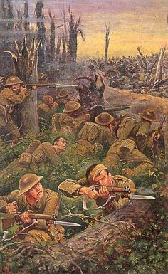

100 лет битве на Сомме
1 июля, 14:49
Сегодня исполняется 100 лет со дня начала одного из самых кровопролитных сражений XX века и истории человечества - битве на Сомме.
Битва на Сомме
К этой операции западные державы готовились в течение 4 месяцев, и в ней приняли участие небывалые по размерам боевые средства в виде тяжелых орудий, авиации и количества боеприпасов. Операция на Сомме, продолжавшаяся почти 5 месяцев, велась при большом участии новейшей техники и производства мировой индустрии. К летнему периоду кампании сражение на Сомме относится только первой своей половиной.
Общая обстановка и подготовка сторон
План германского командования выявлялся из плана всей кампании 1916 г. Не достигнув в предшествовавшие годы войны решительных результатов ни на одном из фронтов, германцы невольно были принуждены перейти к обороне, поставив себе целью расстроить ожидавшиеся совместные операции армий Антанты. Задачу эту германцы, как известно, опять-таки решили выполнить наступательной операцией, для чего и избрали Верден.
Бросив на Верден последовательно 46 дивизий и протянув туда 70 французских дивизий, германцы были вправе рассчитывать, что они лишили возможности французскую армию перейти к наступательным операциям в широком размере. Но со стороны англичан германцы ожидали выступления: первоначально — как ответ на атаку Вердена, а потом — как содействие операциям на Русском фронте. Противодействовать наступлению англичан они могли только обороной, почему и обратили особое внимание на усиление своей обороны против сектора, занятого английскими войсками, тем более что широкие подготовительные к наступлению работы англичан для них не оставались секретом.
Германские позиции оборудовались здесь в течение 2 лет и представляли собой высокий образец использования техники и военно-инженерного искусства. Колючая проволока, бетон, безопасные помещения для гарнизона, скрытая фланговая оборона пулеметами, деревни и леса, обращенные в своего рода маленькие крепости, — таков в общем характер укрепленных позиций германцев, которых они имели 2 полосы в 2-3 км одна от другой и начали строить 3-ю.
К концу июня германцы имели на секторе будущей атаки по обе стороны Соммы 8 дивизий, из которых 5 к северу от нее против англичан и 3 к югу против французов. Кроме того, они имели 12-13 дивизий в резерве, из которых 4 находились в районе Камбре — С.-Кантен и 3 — в районе Ипра.
Со стороны англо-французов первоначальный план операции был выработан до начала атаки Вердена и сводился к одновременному удару обеих союзных армий в одном, достаточно обширном районе, чтобы избежать опасности контрударов противника в открытый промежуток между внутренними флангами, в случае если удары будут наноситься отдельными группами. Поэтому и был выбран для атаки участок по обе стороны Соммы на непрерывном фронте в 70 км.
Но Верденская операция, истощившая французскую армию, заставила изменить первоначальный план, возложив главную роль в наступлении на Сомме на английскую армию, доведенную уже до 56 дивизий; французские же войска должны были в предполагаемой oneрации играть вспомогательную роль.
Общий план операции сводился к прорыву неприятельского фронта в районе Балом — Камбре и в направлении вслед за этим маневренной массы на коммуникации противника на Камбре — Валансьенн — Мобеж. Этот общий план Жоффр разделил еще на отдельные фазы, указав для упорядочения совместных действий первые и последующие рубежи, которых должны достигать английская и французская армии. Такое разделение оказало вредное влияние на ход всей операции, так как французы, выполнив первую задачу, т.е. достигнув указанного рубежа, ожидали, пока ее не выполнят англичане.
Англичане с особой заботливостью отнеслись к подготовке операции. Обширные склады запасов и продовольствия были сосредоточены за фронтом, был проведен ряд железнодорожных веток, узкоколеек, трамваев и новых дорог. Была устроена масса безопасных убежищ, ходов сообщения, сосредоточены боеприпасы в ближайших местах и пр.
Англичане должны были атаковать 3-й и 4-й армиями к северу от Соммы между Марикуром и Гебютерном на фронте 25 км, в направлении на Бапом, причем главный удар наносился 4 корпусами на фронте Марикур — Сен-Пьер Дивон, что на р. Анкр, а вспомогательные — далее к северу до Гоммекура.
Французы с своей стороны назначили для удара 6-ю армию ген. Файоля. Эта армия должна была атаковать для поддержки англичан по обе стороны Соммы на фронте 12 км от Марикура до Фукокура. Южнее Соммы была сосредоточена на случай развития успешного прорыва вновь образованная 10-я армия. Французы также с особой тщательностью подготовили в течение 4 месяцев свою операцию. Они обратили особое внимание на богатство артиллерии и авиации. В течение первых 5 дней развития операции французская авиация совершенно очистила небо от неприятельских летчиков. Общее руководство всей операцией было возложено на ген. Фоша.
Частная обстановка на фронте Гоммекур - Фукокур
К началу сражения на Сомме англичане развернули на участке намеченного прорыва 6 корпусов. На левофланговом участке для атаки на Гоммекур находился VII корпус в составе 46-й и 56-й дивизий. Южнее, от Гебютерна до Марикура, на участке в 25 км стояло 5 корпусов 4-й армейской группы Роулинсона, получившие следующие задачи: VIII корпус, в составе 31-й, 4-й и 29-й дивизий в первой линии и 48-й дивизии в резерве, — атаковал на 4-километровом участке Серре-Гамель; X корпус развернулся на 5-километровом фронте к югу до высоты 141 южнее Типваля, имея 36-ю дивизию и 32-ю на фронте и 49-ю в резерве; III корпус атаковал на 2-километровом участке от Овилер до Ля-Буазеля 8-й и 34-й дивизиями, имея 19-ю дивизию в резерве; XV корпус развернул на 5-километровом фронте от Ля-Буазеля до Мамеца все 3 дивизии (21, 17 и 7-я дивизии) в первой линии и XIII корпус в составе 18-й и 30-й дивизий в первой линии и 8-й дивизии в резерве атаковал на 4-километровом фронте от Мамеца до Марикура.
Южнее Соммы развернулась для прорыва на 16-километровом фронте 6-я французская армия Файоля, имея в первой линии 10 дивизий и в резерве 4 пех. и 4 кав. дивизии. Атака 6-й французской армии поддерживалась 216 орудиями калибров от 90 до 105 мм, 516 орудиями 120-мм — 280-мм и 122 орудиями большой мощности. Кроме того, на участке прорыва имелось до 1100 траншейных мортир, что дает в среднем на 1 км до 75 батарей, 55 орудий (из них 8 тяжелых) и 69 траншейных мортир. Обеспеченность боеприпасами была колоссальная: имелось до 6 млн. 75-мм снарядов и по 3100 выстрелов на 90-мм — 105-мм орудия, по 2630 выстрелов на 120-мм — 155-мм орудия и по 1700 выстрелов на калибры свыше 200 мм.
Германцы против английского участка прорыва имели в первой линии 5 дивизий XIV резервного корпуса и 3 дивизии в резерве. Дивизии первой линии располагались: 2-я гвардейская — на 5-километровом участке севернее Гоммекура, поддерживалась 52 легкими и 21 тяжелым орудием; 52-я дивизия — на 4-километровом участке от Гоммекура до Серре включительно, поддерживалась 64 легкими и 52 тяжелыми орудиями; 26-я резервная дивизия на 8-километровом фронте от Серре до Овилера поддерживалась 100 легкими и 48 тяжелыми орудиями; 28-я резервная — от Овилера до высоты 125 восточнее Мамеца, имея для поддержки 7-километрового фронта 108 легких и 61 тяжелое орудие, и 12-я дивизия — 7-километровом участке от высоты 125 до Соммы, имея для поддержки 76 легких и 30 тяжелых орудий. В среднем на 1 км укрепленной позиции у германцев было 20 орудий (из них 7 тяжелых). Южнее Соммы, на участке 6-й французской армии, располагался XVII германский корпус.
Ход операции
Операцию на Сомме можно разделить на 4 периода: 1) начало ее, когда союзники имели преимущественно неожиданности и благодаря этому больше шансов на успех, что продолжалось до 10 июля; 2) период затишья или борьбы на истощение, который продолжался до конца августа; 3) новое общее наступление с 3 по 28 сентября и 4) последние, не имевшие реальных результатов попытки дальнейшего его развития, которые относятся к октябрю и ноябрю.
1 июля французы и англичане после сильной артиллерийской подготовки начали свои атаки. Артиллерийский огонь был, по словам Людендорфа, так могуществен, что под его прикрытием пехота доходила до германских укреплений раньше, чем гарнизон мог выбраться из своих подземелий. На французском участке, где атака была особенно неожиданна для германцев, успех был весьма значительный. Германцы после нескольких контратак начали быстро отступать и даже очистили такие важные пункты, как Биаш и Барле, которые передавали в руки французов весь участок южного берега Соммы, фланкировавший германские позиции севернее ее. Но французский командир корпуса, строго руководствуясь указанным ему рубежом, который должен быть занятым в первый день, приостановил свое наступление, а германцы вновь заняли эти важные селения. Интересно, что Барлё французам так впоследствии и не удалось завладеть в течение всей четырехмесячной операции.
Правый, соседний с французами, фланг англичан так же успешно продвинулся, но левофланговые их корпуса не выдержали германских контратак и огня, пришли в расстройство и даже были заменены корпусами соседней армии. Ген. Хейг решил, сберегая свои молодые войска, в будущем развивать операцию только 2 правофланговыми корпусами, т.е. в первый же день район операции был намного сокращен.
К 10 июля французы южнее Соммы быстро продвинулись на фронт Биаш (вкл.) — Барлё (искл.) — Эстре (вкл.) — Фукокур; севернее Соммы англичане к этому времени с трудом продвинулись на фронт Овилер — лес Мамец — лес Трон — фер. Фальфемон — фер. Монакю. Таким образом, продвижение к югу от Соммы было гораздо значительнее, чем к северу, где к тому же дальнейшее наступление на восток было затруднительно, пока прорыв не будет расширен на север, чтобы обеспечить атакующие войска от флангового огня.
Ввиду этого ген. Хейг решает 14 июля развить свой успех далее на север и к 17 июля продвигается здесь на линию сел. Малый и Большой Базентен и Лонгеваль, причем далее фронт поворачивался на юг на соединение с французами.
Германцы начали быстро сосредоточивать в угрожаемом направлении свои резерву, прибегнув даже к крайней мере переброски батальонов, составлявших участковые резервы на пассивных фронтах. Это дало им возможность усилить свои войска в районе прорыва к половине июля свыше чем на 11 дивизий, т.е. всего 18 — 19 дивизий; к концу же июля силы их здесь увеличились до 30 дивизий.
Операция при таких условиях, очевидно, должна была принять затяжной характер; она сводилась к истощению живой силы противника, к перегруппировке тяжелой артиллерии и в ближайшие дни не обещала решительных успехов, время для которых было упущено.
С 20 по 25 июля англичане атаковали 17 дивизиями в северном направлении, а французы расширили свой прорыв на юг между Суаекуром и Вермандовиллером; 30 июля союзники произвели новую общую атаку, давшую весьма незначительные результаты; 12-24 августа французы атаковали Морепа также с весьма незначительными результатами.
В конечном итоге всех этих атак союзники занимали к концу августа линию южнее сел. Типваль — Флер — западнее сел. Женши — Гюйемон — восточнее Морепа и западнее Клери. К югу от Соммы фронт остался с 10 июля без изменения, за исключением южного участка, где он от Эстре направился на Вермандовиллер.
Что же представляют собой два первых месяца сражения на Сомме? Неудачу, принимая во внимание собранные здесь силы, а в особенности могущественные технические средства и длительность подготовки. Углубление при таких условиях в неприятельский фронт на 3-8 км иначе как неудачей и нельзя назвать.
И если мы сравним то, что одновременно происходило на западе Европы и на востоке, где русские корпуса пускались у Риги, Барановичей и на Стоходе почти без помощи тяжелой артиллерии и при недостатке снарядов на вооруженных с ног до головы германцев, то неудачи русской армии примут иной колорит, который выделит качества русского бойца на высшую ступень по сравнению с его западными союзниками.
Сомма стала жертвой двуединого управления, жертвой уравнивания фронта по рубежам, вследствие чего французы упустили возможность использовать свой успех первого дня к югу от реки и так и замерзли здесь на этих первых достижениях. Сомма показала, что не найдены были еще основы борьбы при условиях современной техники и позиционной войны, а также способы выхода на маневренный простор, если только действительно союзники предполагали это сделать. Одной техники здесь оказалось мало; необходим был и маневр, которого англо-французы не дали.
В то же время со стороны германцев мы видим четкие приемы оперативной обороны, основанной на контрударах глубоких резервов.
http://xn----7sbbfcoy5atdmf5qh.xn--p1ai/article/item/82 - цинк
О потерях в битве на Сомме.
http://marvin-robot.livejournal.com/1426107.html - цинк
ПОТЕРИ В БИТВЕ ПРИ СОММЕ 1916 ГОДА
1 июля 1916 года британские и французские войска начали наступление на германские позиции у реки Сомма. Но наступление захлебнулось в первый же день. Несмотря на это союзники продолжили атаки и прекратили их только в ноябре 1916 года. За продвижение в 9,6 километров было заплачено жизнями тысяч людей.
Самый первый день битвы на Сомме стоил британцам 57 470 человек, включая 19 240 человек убитыми. 7-я дивизия потеряла 3 380 человек, 8-я дивизия - 6 380 человек, 18-я дивизия - 3 115 человек, 21-я дивизия - 4 256 человек, 29-я дивизия - 5 240 человек, 30-я дивизия - 3 011 человек, 32-я дивизия - 3 949 человек, 34-я дивизия - 5 121 человек, 36-я дивизия - 5 104 человек, 46-я дивизия - 2 455 человек, 56-я дивизия - 4 314 человек.
11-12 июля 1916 года британцы атаковали чуть южнее и снова безрезультатно. 38-я дивизия потеряла 190 офицеров 3 803 нижних чинов.
В концу июля 1916 года к атакам подключились австралийские дивизии. 2-я австралийская дивизия к 6 августа 1916 года несколько продвинулась вперед, потеряв 6 800 человек.
Атаки в сентября 1916 года стоили Четвертой британской армии 29 тысяч человек.
Общий итог битвы на Сомме для Четвертой британской армии: 278 125 убитых и раненых при 15 650 захваченных немцев. Резервная (Пятая) армия: 125 531 убитых и раненых, при 17 723 немецких пленных.
Всего битва на Сомме стоила Британии 419 654 человека, включая 131 тысячу убитых. Французы потеряли 204 253 человека. Всего у Антанты - 623 907 человек. Потери немцев оцениваются в диапазоне 450-600 тысяч человек. При потерях Британской империи за войну - 908 371 погибших - битва за Сомму внесла не малый вклад в печальный итог.
Есть данные, что с 1 июля по 19 ноября 1916 года Великобритания потеряла на Сомме 498 тысяч человек, включая 20 тысяч человек умерших от ран. Британцы теряли 2 943 человек в день или три батальона. Каждая британская дивизия потеряла в среднем 8 026 человек. Австралийские дивизии потеряли в среднем 8 960 человек, новозеландские - 8 133, канадские - 6 329 человек.
Германия в 1916 году потеряла более миллиона человек, включая 336 тысяч у Вердена и 460-600 тысяч у Соммы. С учетом боев на Русском фронте, вероятно, на Сомме германцы едва ли потеряли более полумиллиона человек. Франция потеряла на Сомме около 210 тысяч человек.
Таким образом потери воюющих сторон в битве на Сомме достигли 1 миллион 208 тысяч человек.
Источники:
Gilbert Martin The Somme: Heroism and Horror in the First World War - New York, 2006
Hart Peter The Somme - Pegasus book, 2014
Pegler Martin Attack on the Somme - Pen & Sword, 2006
http://www.warconflict.ru/rus/statistika/?action=shwprd&id=1095 - цинк
Но трупами противника заваливали русские.
В заключении, немного живописи и артов на тему.

Каждый день уносил пять тысяч, а иногда пятьдесят тысяч человеческих жизней, пожирал запасы, технику, деньги. Все это предрешило исход военных операций на дальних рубежах, как например в Дарданеллах, что в ином случае могло бы привести к скорейшему окончанию войны. После неудач первого месяца воюющие стороны очутились в тупике, определившем вид будущих боев, а также условия мира, суть послевоенного периода и характер Второй Мировой войны.
Люди не в состоянии вести такую колоссальную и мучительную войну без веры в ее окончание, без надежды на лучшее будущее, на то, что будут заложены основы нового мира. Как мираж Парижа поддерживал силы солдат Клюка на марше, видение этого лучшего мира озаряло голые, изрытые снарядами, когда-то зеленые поля и безобразные обрубки тополей, которые еще недавно украшала густая и красивая крона.
Наступления, похожие на бойню, когда сотни и тысячи людей гибли, чтобы захватить десяток метров чужой территории, сменив одну траншею с болотной грязью на другую, оскорбляли здравый смысл и достоинство человека. Каждую осень говорили, что этот ужас кончится к зиме, но наступала весна, а войне по-прежнему не было видно конца; армии и народы сражались лишь с одной надеждой — человечество извлечет из всего этого хороший урок.
Война наконец кончилась, последствия ее были многообразны и бесчисленны, но над всем преобладало одно: разочарование. (с) "Августоские пушки" Барбара Такман